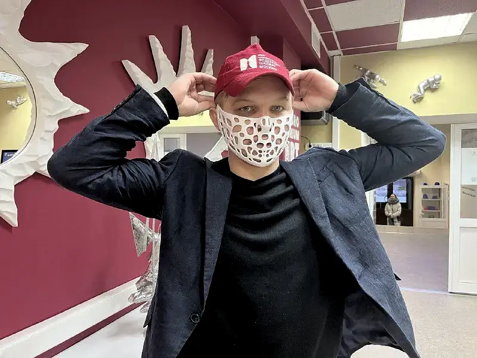

Реализовано0101 / Направление лаборатории
Промышленный дизайн и прототипирование
Проектируем внешний вид, эргономику и конструкцию с учётом будущего производства. Прототип позволяет проверить решение до затрат на оснастку или серию.
Обсудить задачуРезультат этапа
- зафиксированные требования к изделию
- концепцию и CAD-модель
- физический прототип согласованного уровня
- перечень решений для следующей итерации
С чем можно обратиться
Подходит
для вашей задачи.
- нового корпуса или устройства
- проверки эргономики и компоновки
- подготовки идеи к производству
- демонстрационного или функционального прототипа
Как устроена работа
- 01
Собираем требования
Разбираем сценарий использования, ограничения, компоненты и критерии результата.
- 02
Проектируем
Создаём концепцию, геометрию и конструктивную схему с учётом производства.
- 03
Прототипируем
Изготавливаем макет или рабочий прототип для проверки ключевых гипотез.
- 04
Корректируем
Фиксируем результаты испытаний и обновляем модель перед следующей стадией.
Практика
Проекты
в этом направлении.
Посмотрите примеры геометрии, производственных этапов и готовых изделий.
 Реализовано02
Реализовано02СТД России · полный цикл · 10 дней
Награда для премии СТД России
Проект представлен Технопарком РГСУ
- 10 дней
- Вручал Владимир Машков
Определим
первый шаг.
Для оценки нужны назначение, габариты, исходные данные и желаемый срок. Состав работ и стоимость обсуждаем индивидуально.
Подготовить обращение